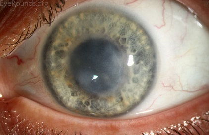
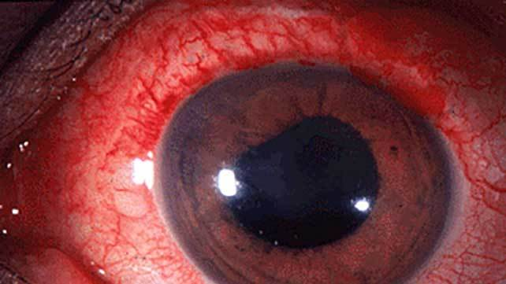

29 Oct 2025
After this session the students should be able to:
Viral pathogenesis is the process by which viruses cause disease in their hosts through complex interactions
Abortive infection
Localized infection
Systemic infection
Latent infection
Fatal infection
Respiratory route (most common)
Digestive route
Parenteral route
Ocular route
Vertical transmission
Sexual transmission
Vector-Borne transmission
Viremia - Direct entry into bloodstream from infection site - Low viral levels - Examples: Poliovirus, HBV
Lymphatic spread - Through lymph vessels and nodes - Common for many viruses - Can lead to lymphadenopathy - Examples: HSV, Poliovirus
Viral factors:
Host factors:
Respiratory system Upper Respiratory Tract - Rhinitis, pharyngitis, laryngitis - Viruses: Rhinovirus, Coronavirus, Adenovirus, Influenza
Lower Respiratory Tract - Bronchitis, pneumonia - Viruses: Influenza, RSV, Parainfluenza, SARS-CoV-2
Nervous system Central Nervous System - Meningitis: inflammation of meninges (Enteroviruses, HSV) - Encephalitis: brain inflammation (HSV, Varicella-zoster virus (VZV), Arboviruses) - Myelitis: spinal cord inflammation (Poliovirus, Enteroviruses)
Gastrointestinal system Gastroenteritis - Diarrhea, vomiting, malabsorption - Viruses: Rotavirus, Norovirus, Adenovirus
Hepatitis - Liver inflammation and damage - Viruses: HBV, HCV, EBV
Eyes - Conjunctivitis: Adenovirus, Enterovirus - Keratitis: HSV, VZV - Retinitis: Cytomegalovirus (in immunocompromised)
Cardiovascular system - Myocarditis: Coxsackievirus B, Influenza - Pericarditis: Coxsackievirus, EBV
Endocrine system - Pancreas: Coxsackievirus (type 1 diabetes association)
 
Structural factors: viral proteins and surface components
Functional factors: viral enzymes and regulatory proteins
Evasion factors: mechanisms to avoid host immunity
Three lines of defense:
Skin
Mucous membranes
Chemical barriers
Secretions with antiviral activity
Type I Interferons (IFN-α/β)
Inflammatory response
Cellular innate responses
Natural Killer (NK) Cells
Macrophages
Dendritic cells
Humoral immunity (B Cells and Antibodies)
Antibody Types
Memory B Cells
Cell-mediated immunity (T cells)
CD8+ T Cells (Cytotoxic T Lymphocytes)
CD4+ T Helper Cells
Memory response characteristics
Vaccination principles
Successful Host Defense
Balanced infection
Failed Host Defense
Analyze the following viruses considering these points:
Viruses to analyze: